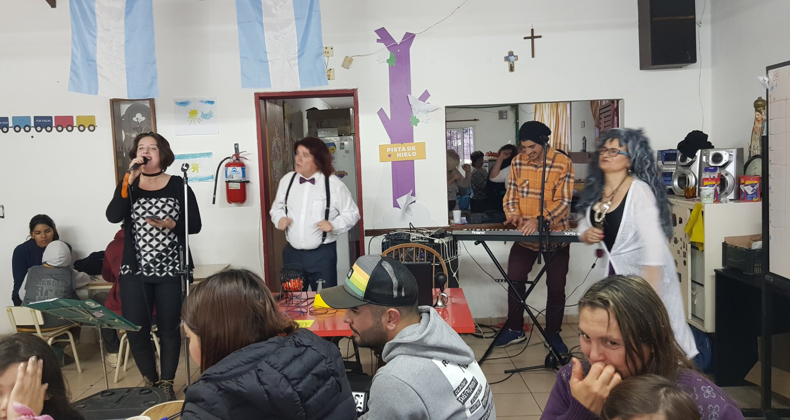

En esta sección encontrará respuestas a las consultas más habituales sobre donaciones, eventos, voluntariado y el funcionamiento del Hogar Aleluya.
Sobre el Hogar
Donaciones
Eventos
Voluntariado
¿Cuál es el propósito del Hogar Aleluya?
Ayudar a las familias de bajos recursos de nuestro barrio, poniendo a su disposición un establecimiento que los contenga, guíe a sus niños y los motive a continuar sus estudios académicos para que puedan abrir nuevos horizontes y cumplir un rol funcional dentro de la sociedad.
¿Cuántos niños concurren al establecimiento?
Actualmente entre 90 y 110 niños de 3 a 18 años. Los niños que asisten pertenecen a familias de bajos recursos. El único requisito para poder asistir es mantenerse escolarizados.
¿En qué horario asisten los niños?
Los chicos concurren a contra-turno de la escuela. En condiciones normales, asisten por un periodo de aproximadamente 3 horas por día. Están agrupados en 4 niveles según sus edades, cada uno con una maestra asignada.
¿Cuál es la función pedagógica del Hogar?
Mejorar la escolaridad y contrarrestar las falencias de la escuela estatal. El Hogar sirve de complemento a la educación que los niños reciben durante su jornada escolar, con el objetivo de motivarlos y evitar la deserción escolar.
¿Reciben subsidios del Estado?
No recibimos subsidios del Estado. La organización se financia gracias a la solidaridad de donantes y colaboradores. No aceptamos ayuda a cambio de contraprestación política.
¿Cómo hago para convertirme en un donante mensual?
Puede realizar donaciones recurrentes a través de las plataformas DonarOnline (donaronline.org) o Mercado Pago. También puede contactarnos directamente a través del formulario de contacto o por teléfono para coordinar su aporte mensual.
¿A qué se destinan los fondos?
Invertimos el dinero en los salarios de las maestras, el mantenimiento del establecimiento y en los alimentos para los niños. También en útiles escolares y las distintas necesidades que surjan en relación al funcionamiento del Hogar y la comunidad de familias que lo integran.
¿Qué hacen con las donaciones que no necesitan?
Tenemos una sección llamada "Roperito Comunitario" donde depositamos las donaciones que no necesitamos o que no vamos a usar en el establecimiento. Todo lo que se encuentra allí es ofrecido gratuitamente a quien lo necesite.
¿Qué medios de pago puedo utilizar para realizar mi donación?
Aceptamos donaciones a través de DonarOnline (donaronline.org) y Mercado Pago (mercadopago.com.ar). Puede elegir el monto, las cuotas y las bonificaciones según su conveniencia.
¿Qué tipo de donaciones puedo realizar?
Cualquier tipo de donación es bienvenida: dinero, alimentos, mercadería, ropa, útiles escolares, materiales y demás aportes que puedan contribuir al bienestar de los niños y el funcionamiento del Hogar.
¿Cuentan con donantes recurrentes?
Sí. Contamos con el apoyo de Highland Park Country Club (importe mensual), Fundación Marolio (para compra en Maxiconsumo), Red Solidaria Copello (alimentos mensuales), Banco de Alimentos (productos a bajo costo), Acción Comunitaria Mercado Central (mercadería mensual) y Fundación Teatrarte (entretenimiento gratuito dos sábados al mes).
¿Qué eventos realizan?
Organizamos ferias del usado para recaudar fondos, celebramos el Día del Niño con la Red Solidaria Copello (invitamos a los niños a un campo de deportes), participamos en Pinta Niño con el Instituto de Derecho de Familia de la UNLZ, disfrutamos de obras de teatro de Fundación Teatrarte y realizamos bingos solidarios, entre otras actividades.
¿Cómo puedo participar en los eventos?
Puede participar asistiendo a las ferias del usado (donde se venden productos a precios accesibles), colaborando como voluntario en la organización o donando elementos para los eventos. También puede contactarnos para proponer nuevas actividades. Visite la sección de Eventos para conocer las fechas y detalles.
¿Qué es el Roperito Comunitario?
Es una sección donde ofrecemos a la comunidad las donaciones que recibimos y que no utilizamos en el establecimiento. Funciona por las tardes y lo que no se vende en las ferias del usado queda disponible allí para quien lo necesite.
¿Qué talleres ofrecen?
Algunos de los talleres que ofrecemos son: comprensión de textos, fotografía, radio, teatro, electricidad, cocina y costura. Los talleres se dictan según el voluntariado que recibamos. Estamos abiertos a recibir nuevos instructores de distintas disciplinas. Ocasionalmente, los instructores ofrecen oportunidades laborales a los jóvenes tras completar los talleres.
¿Cómo me postulo como voluntario?
Complete el formulario de la sección Voluntarios indicando sus habilidades, disponibilidad y el tipo de actividad en la que desea colaborar. Nos pondremos en contacto para coordinar su participación. Puede ofrecer talleres, ayudar en actividades recreativas o proponer nuevas iniciativas.
¿Cómo puedo saber que la organización es confiable?
Hogar Aleluya es una ONG fundada en el año 2000, con más de dos décadas de trayectoria en el barrio. Trabajamos en red con escuelas, el jardín y el Centro de Atención Primaria. Puede visitarnos en Los Narcisos 1197, Manuel Alberti, Pilar, o contactarnos por teléfono (02320-403550 / +54 9 11 2597 1197) para conocer nuestras instalaciones.
¿Qué pasa con mis datos personales?
Sus datos personales se utilizan exclusivamente para coordinar su colaboración con el Hogar (donaciones, voluntariado o consultas). No compartimos información con terceros. Puede solicitar la modificación o eliminación de sus datos contactándonos.
Si no encontró la respuesta que buscaba, puede contactarse con nosotros y realizarnos las consultas que desee.
Contacto